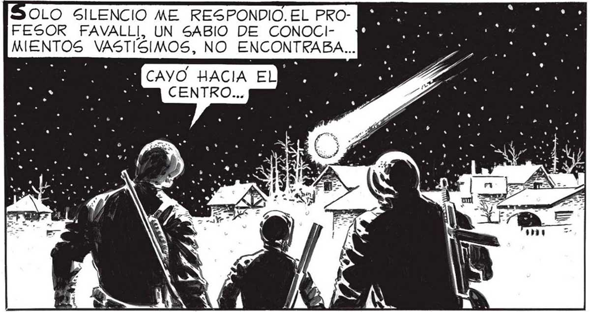
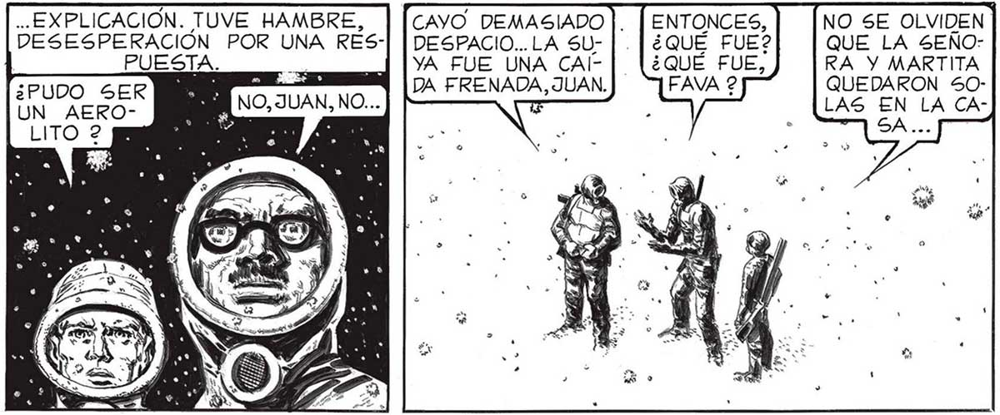

OLO SILENCIO ME RESPONDIO. EL PRO- MA FESOR FAVALLI, UN SABIO DE CONOCI- Pp a MIENTOS VASTISIMOS, NO ENCONTRABA... O CAYO HACIA ELP JA CENTRO... Fue OPORTUNÍSIMA LA SALIDA DE PABLO. NOS LLAMO A LA REALIDAD. MUY BIEN, PABLO. AHORA NO ES | TIEMPO DE CAVILAR, AHORA ES ME TIEMPO DE ACTUAR. quel CRUZAMOS LA AVENIDA A LA CARRERA Y LLEGAMOS A LA ESTACION DE SERVICIO, ALLÍ” ESTABA EL CAMION | QUE HABÍA VISTO FAVALLI. SÍ... Y CAE MAS A LENTAMENTE a AÚN... A ¡IGUALA LA A ANTERIOR! 67 .. EXPLICACION. TUVE HAMBRE, DESESPERACIÓN POR UNA RESPUESTA. CAYO DEMASIADO |. DESPACIO... LA SUYA FUE UNA CAlDA FRENADA, JUAN. NO SE OLVIDEN QUE LA SEÑORA Y MARTITA QUEDARON 50LAS EN LA CA2 SA... DesocupAMOS LA CABINA. CON REPUGNANCIA INDECIBLE, COMO QUE TODAVIA NO TENIAMOS EL HABITO DE TANTA MUER TE EN TODAS PARTES. SAQUÉMOSLO... SERA DIFÍCIL ENCONTRAR UN | CAMION MAS ADECUADO. SS , Y / EAS y. Y /25 E / A - ¿A " * | (ASA Es “ cu 5 Ye , TIENE LA CABINA OCUPADA, FAVA. ) W MA CAE CASI EN EL MISMO MS LUGAR QUE LA OTRA... MN NO CABE DUDA YA... NO SON AEROLITOS... NO, NO SON AEROLITOS... Y NO 5E PARECEN A NADA É FABRICADO POR [18 EL HOMBRE... A SENTÍ UN TERROR TOy| TALMENTE NUEVO. UN TERROR INDECIBLE, PROFUNDISIMO, COMO QUE NO ERA YA UN SIMPLE TERROR DE HOMBRE. ERA EL TERROR ANIMAL DE MI ESPECIE, DE MI ESPECIE HUMANA; UN TERROR COMO SIENTEN CIERTOS ANIMALES SALVAJES ANTE LA VECINDAD DEL HOMBRE. ME ENTRO UNA PRISA DESESPERADA POR ESTAR JUNTO A ELENA, JUNTO A MARTITA. Y DE ESCAPAR...

